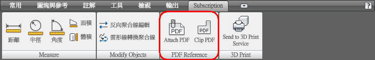

AutoCAD 2009 Bonus Pack 2 加入了「貼附 PDF 參考底圖」功能
這是既 外部參考 DWF 及 DGN 又一項創舉，使用方法同 一般外部參考 原則!

而這個 Bonus Pack 2 更新增了一組 DWG To PDF Bonus Pack.pc3 繪圖機，使用這個繪圖機出圖可以讓您外部參考PDF時，也可以控制圖層的開關(可見性)，跟參考DWF一樣可以關閉圖層，而且最方便的是可以使用 Adobe Acrobat 開啟 PDF 時，這樣在 Adobe Acrobat 也可以控制圖層開關。
※「貼附 PDF 參考底圖」功能展示說明：
1.DWG To PDF Bonus Pack.pc3 繪圖機
2.Adobe Acrobat 圖層管理控制(可見性)
2.PDFATTACH 外部參考 PDF 功能
3.PDFLAYERS 圖層管理控制(可見性)
4.PDFADJUST 修改 PDF 參考底圖的對比、濃淡、單色以及背景顏色
5.PDFCLIP 使用截取邊界定義 PDF 參考底圖的子面域
6.PDFFRAME 控制 PDF 參考底圖架構框是否可見
7.PDFOSNAP 控制 PDF 參考底圖是否可以使用物件鎖點
全頻展示：
※特別說明(智慧財產)：
為了確保圖面的智慧財產權，之前在2008新功能介紹「貼附 DWF 參考底圖」有展示過，這裡也可以使用 PDF 文件格式，在貼附後即可和原來的 DWG圖檔相差無異，如此一來可以真正確保智慧財產。
[討論]AutoCAD 2010新功能初探
http://autocad.bestoforum.net/forum-f44/topic-t1503.htm
[發表]AutoCAD 2009 - Bonus Pack 1 新功能展示